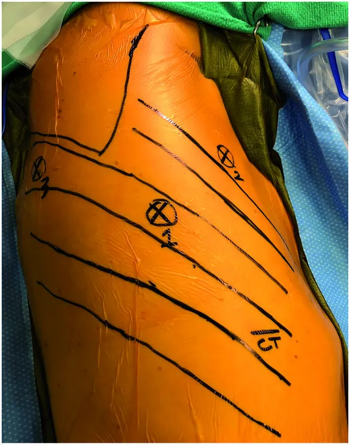

Cirugía torácica robótica›Opérculo torácico›Tratamiento
Tratamiento del opérculo torácico
Terapia física primero en la variante neurogénica; trombólisis y descompresión precoz en la venosa; reparación arterial en la arterial. Y en las tres, cuando la compresión depende de la primera costilla y los escalenos, la resección robótica transtorácica.
Un manejo multidisciplinario
El síndrome del opérculo torácico se trata en equipo: cirugía torácica, fisiatría y kinesiología, neurología, cirugía vascular y radiología intervencional. El cirujano torácico coordina la evaluación y aporta la vía robótica transtorácica; la terapia física es el primer escalón en la variante neurogénica, y la cirugía vascular entra cuando hay una lesión del vaso que reparar.
Terapia física
- Masoterapia y ultratermia.
- Ejercicios cervicales y elongación de los escalenos.
- Fortalecimiento del trapecio y de la cintura escapular.
- Corrección postural y ergonomía; analgesia.
- Bloqueo con toxina botulínica en casos seleccionados.
Varios meses de tratamiento bien realizado antes de plantear la cirugía, salvo déficit neurológico progresivo.
Anticoagulación y trombólisis
En la trombosis de esfuerzo: anticoagulación, venografía y trombólisis farmacomecánica dirigida por catéter, seguidas de descompresión quirúrgica precoz. Tras la resección de la costilla, una parte de los pacientes necesita venoplastía con balón para completar la permeabilidad.
Descompresión y reparación arterial
Con dilatación de la subclavia sin complicaciones basta la descompresión y vigilancia; con aneurisma o embolias distales se añade reconstrucción arterial, tromboembolectomía o bypass, con cirugía vascular.
Las vías quirúrgicas
La primera costilla puede resecarse por encima de la clavícula, por la axila o desde el interior del tórax. Cada vía tiene su lugar; la diferencia principal está en cómo se ve la costilla y cuánto hay que manipular el plexo braquial para llegar a ella.
| Vía | Incisión | Qué permite | Plexo braquial | Cuándo se prefiere |
|---|---|---|---|---|
| Supraclavicular / infraclavicular | Una, sobre o bajo la clavícula | Reparaciones arteriales o venosas, neurólisis del plexo, resección de costillas cervicales y bandas cervicales | Se expone y se moviliza directamente | Costilla cervical, lesión vascular que reparar |
| Transaxilar (Roos) | Una, en la axila | Resección de la primera costilla y escalenectomía parcial; versión videoasistida descrita | Se retrae para exponer la costilla | Vía clásica del neurogénico y del venoso sin anomalías asociadas |
| Mínimamente invasiva transtorácica (VATS / RATS) | Tres o cuatro puertos de menos de 2 cm en el costado | Resección completa de la primera costilla, desarticulación costoesternal y sección de los escalenos bajo visión magnificada | Se ve desde abajo; no se retrae ni se manipula | Compresión por primera costilla o escalenos, en las tres variantes |
Resolución robótica
Resección robótica transtorácica
de la primera costilla, paso a paso
- 1
Posición y puertos
Decúbito lateral. Tres o cuatro puertos en el costado del tórax, con el pulmón excluido. El robot se acopla y el cirujano opera desde la consola.
- 2
Exposición desde el interior
Se abre la pleura parietal sobre la primera costilla. Bajo magnificación 3D se identifican, ordenados sobre ella, la vena subclavia, el escaleno anterior, la arteria subclavia, el plexo braquial y el escaleno medio.
- 3
Sección de los escalenos
Los escalenos anterior y medio se desinsertan de la costilla con instrumental articulado, con el nervio frénico y el plexo a la vista y sin retraerlos.
- 4
Desarticulación y resección
La costilla se desarticula de la unión costoesternal por delante y se secciona por detrás, cerca de la apófisis transversa, para no dejar un muñón posterior que vuelva a comprimir. Se retira por un puerto.
- 5
Comprobación y cierre
Se verifica que vena, arteria y plexo quedaron libres en todo su trayecto. Drenaje pleural fino que se retira antes del alta.

Resultados publicados de la vía robótica
Las series robóticas transtorácicas publicadas son todavía de un solo centro y sin comparación aleatorizada con las vías clásicas, pero coinciden en dos hallazgos: la exposición completa del opérculo sin retracción neurovascular y la ausencia de lesiones neurovasculares.
Burt describe la técnica robótica transtorácica como la que ofrece «una exposición incontestable de la anatomía del opérculo y libertad de toda retracción neurovascular». La revisión de técnica de Costantino y Schumacher anticipa que las vías mínimamente invasivas serán cada vez más comunes a medida que más cirujanos adquieran experiencia toracoscópica y robótica, y que faltan datos a largo plazo para establecer su equivalencia o superioridad frente a la cirugía abierta.
Qué cambia con el robot
Frente a la vía transaxilar, el robot no trabaja en túnel: la costilla se ve entera, con las estructuras neurovasculares por encima, sin retraerlas. Frente a la vía supraclavicular, evita la disección del cuello y el riesgo sobre el frénico y el conducto torácico. Lo que no puede hacer es resecar una costilla cervical ni reparar un vaso: por eso el plan quirúrgico se define con la imagen y, cuando corresponde, con cirugía vascular en el mismo acto.
Fuentes
- Burt BM. Thoracic outlet syndrome for thoracic surgeons. J Thorac Cardiovasc Surg. 2018;156(3):1318-1323.e1. doi:10.1016/j.jtcvs.2018.02.096
- Burt BM, Palivela N, Goodman MB. Transthoracic Robotic First Rib Resection: Technique Crystallized. Ann Thorac Surg. 2020;110(1):e71-e73. doi:10.1016/j.athoracsur.2019.12.086
- Gharagozloo F, Meyer M, Tempesta B, Gruessner S. Robotic transthoracic first-rib resection for Paget-Schroetter syndrome. Eur J Cardiothorac Surg. 2019;55(3):434-439. doi:10.1093/ejcts/ezy275
- Costantino CL, Schumacher LY. Surgical Technique: Minimally Invasive First-Rib Resection. Thorac Surg Clin. 2021;31(1):81-87. doi:10.1016/j.thorsurg.2020.09.004
- Kara HV, Balderson SS, Tong BC, D'Amico TA. Video assisted transaxillary first rib resection in treatment of thoracic outlet syndrome (TOS). Ann Cardiothorac Surg. 2016;5(1):67-9. doi:10.3978/j.issn.2225-319X.2015.08.09
- Cook JR, Thompson RW. Evaluation and Management of Venous Thoracic Outlet Syndrome. Thorac Surg Clin. 2021;31(1):27-44. doi:10.1016/j.thorsurg.2020.08.012
- Nguyen LL, Soo Hoo AJ. Evaluation and Management of Arterial Thoracic Outlet Syndrome. Thorac Surg Clin. 2021;31(1):45-54. doi:10.1016/j.thorsurg.2020.09.006
- Kök M, et al. Systematic Review on Botulinum Toxin Injections as Diagnostic or Therapeutic Tool in Thoracic Outlet Syndrome. Ann Vasc Surg. 2023;96:347-356. doi:10.1016/j.avsg.2023.05.009
Preguntas frecuentes sobre el tratamiento
Primer paso
Hable directamente
con el especialista

Dr. David Lazo Pérez
Cirujano Torácico